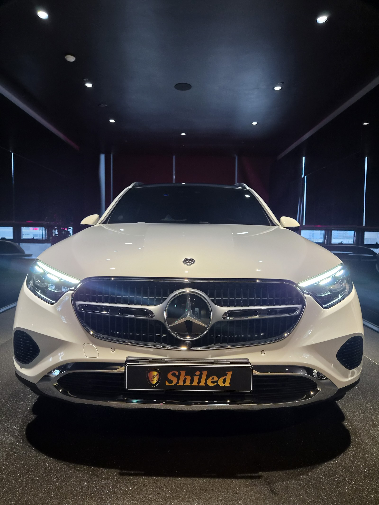
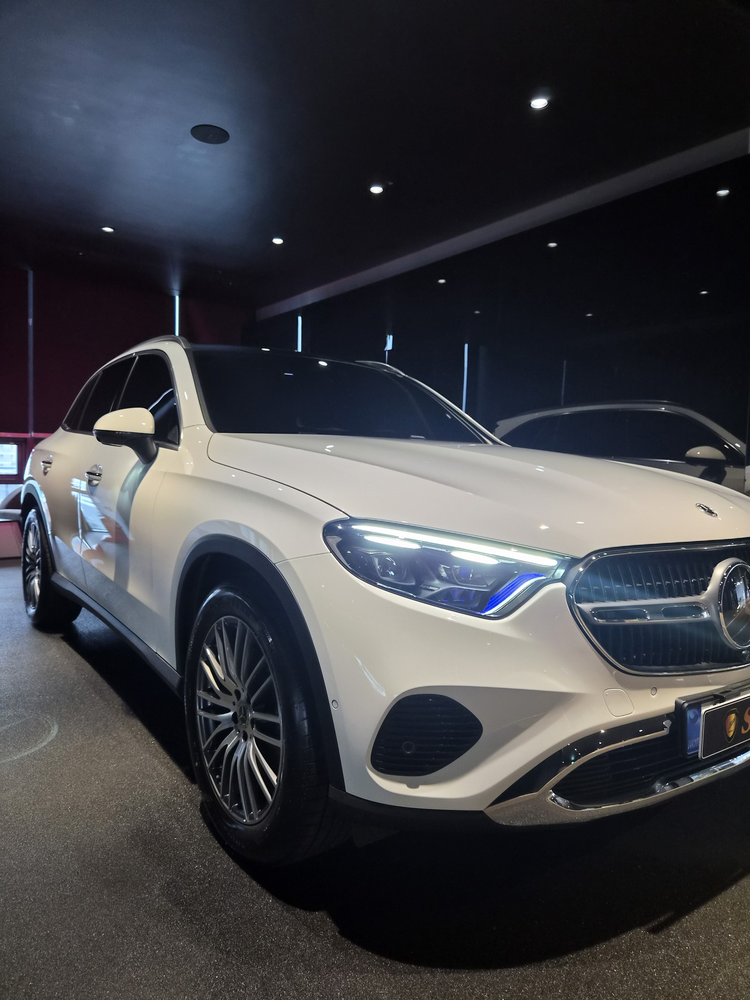
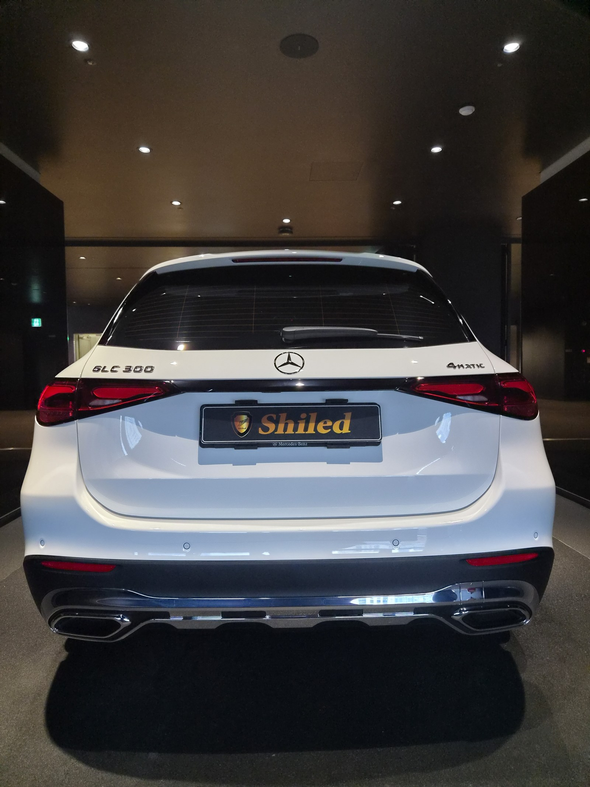
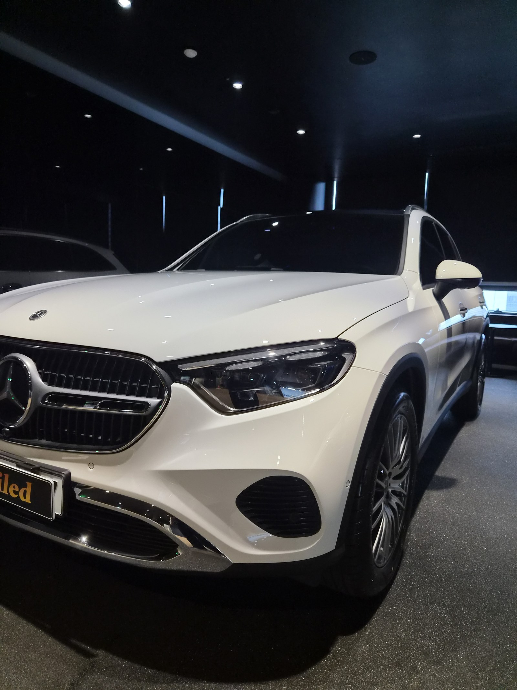

벤츠 GLC300 백색입니다. 아직 출고 전, 새 차입니다.
이 차는 출고 전에 F5 유리막코팅으로 진행했습니다.

벤츠 신차는 왜 쉴드광택을 찾나
쉴드광택은 벤츠 남천점 상조업체로 벤츠 신차를 다수 시공해 온 경험이 있습니다.
벤츠 도장 특성을 잘 알고 있어, 출고 전 코팅을 벤츠 차주분들이 특히 많이 맡겨주십니다. GLC300도 같은 흐름으로 출고 전 신차 시공을 진행했습니다.

백색 신차에 왜 F5인가
백색은 잔기스가 안 보일 뿐 없는 게 아닙니다.
흰색 도장은 빛을 정면으로 받을 때 표면 굴곡이 오히려 잘 드러납니다. F5를 올리면 표면이 매끈하게 정리되면서 젖은 듯한 윤기가 생겨, 자칫 밋밋해 보이기 쉬운 백색 SUV에 입체감을 더해줍니다. 코팅제는 대표가 화학공학 전공으로 직접 개발·제조한 제품입니다.

기술자의 팁
신차라고 바로 코팅을 올리지 않습니다. 운송·보관 중 묻은 미세 오염을 디테일링 세차와 탈지로 걷어낸 뒤에 올립니다. 깨끗한 바탕 위에 올려야 코팅이 제대로 밀착합니다.

자주 묻는 질문
Q. 벤츠 신차는 왜 쉴드광택에서 코팅하나요?
A. 쉴드광택은 벤츠 남천점 상조업체로 벤츠 신차를 다수 시공해 온 경험이 있습니다. 벤츠 도장 특성을 잘 알고 있어, 출고 전 코팅을 벤츠 차주분들이 특히 많이 맡겨주십니다.
Q. 새 차인데 왜 출고 전에 코팅을 하나요?
A. 도장면이 가장 깨끗할 때 올리는 코팅이 가장 오래갑니다. 운행·세차로 잔기스와 오염이 쌓이기 전, 신차 상태 그대로일 때 코팅막을 입혀두면 처음 컨디션을 더 오래 지킵니다.
Q. 백색 신차에는 어떤 코팅이 좋나요?
A. 이 차는 F5로 진행했습니다. F5는 색감 깊이를 끌어올려 글로시함을 극대화합니다. 백색에 젖은 듯한 윤기를 더해, 밋밋해 보이기 쉬운 도장에 입체감을 더해줍니다.
Q. 쉴드광택 위치와 예약은 어떻게 하나요?
A. 부산 남구 유엔로220 1F 쉴드광택입니다. 예약·상담은 010-3384-1850, 대표 최한중이 직접 상담하고 책임 시공합니다.
새 차일수록 시작점이 다릅니다. 가장 깨끗할 때 입혀두십시오.
제품을 직접 만드는 사람이 직접 시공합니다.
부산에서 벤츠 신차코팅을 고민 중이시면 편하게 연락 주십시오.
어떤 차를 타냐보다 어떻게 타냐가 중요합니다~!
시공 중에는 전화를 받지 못할 때가 많습니다.
카카오톡으로 차종과 원하시는 시공을 남겨주시면 확인 후 답변드립니다.
쉴드광택 · 부산 남구 유엔로220 1F · 대표 최한중